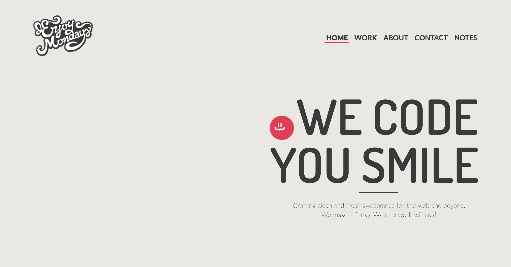

<!doctype html>
<html>
<head>
  <meta name="viewport" content="width=device-width, minimum-scale=0.1">
  <title>using screenshot</title>
  <script src="http://code.jquery.com/jquery-1.11.3.min.js"></script>
  <link href="css/style.css" rel="stylesheet">
</head>
<body>
  
  <div id="ractive-container"></div>
  
  <script id="template" type="text/ractive">

    <div class="img-container"></div>
    
    <div class="instrus">
      <button class="green" on-click="start">Start getting measures</button>
      <button class="red" on-click="restart">Reset</button>

      <p>{{content}}</p>
      
      {{#if total}}
        <p>Main reference dim: <b>{{total}}px</b></p>
        <p>Click two points to get height.</p>
      {{/if}}
    </div>

    <div class="measures">
      {{#if measures}}
      <table>
        <tr>
          <th>Measure</th>
          <th>Proportion</th>
        </tr>
        {{#each measures}}
          <tr>
            <td>{{this.measure}}px</td>
            <td>{{this.proportion}}%</td>
            <td><span class="delete" on-click="remove">X</span></td>
          </tr>
        {{/each}}
      </table>
      {{/if}}
    </div>
  </script>
  
  <script src="http://cdn.ractivejs.org/latest/ractive.min.js"></script>
  <script src="acotar.js"></script>
</body>
</html>

